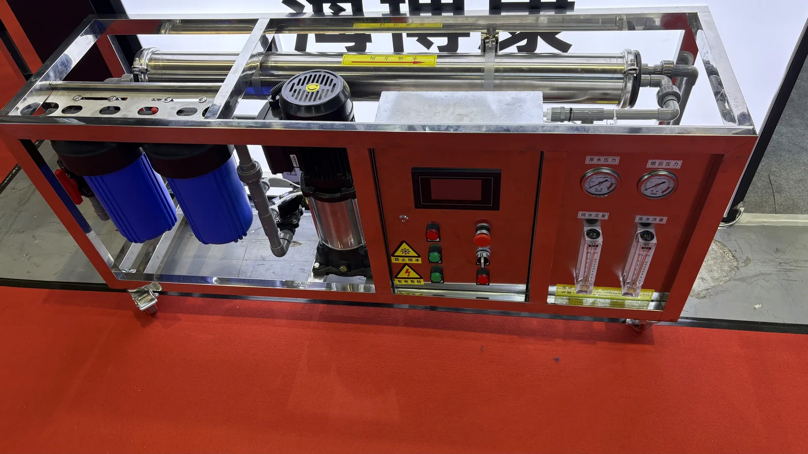

Dahili basınç tanklı RO su arıtma cihazı
Dahili basınç tanklı RO su arıtma cihazı — Toptan siparişler için doğrudan fabrika tedariki; OEM/ODM özelleştirme, dokümante edilmiş kalite kontrol ve ihracat belgeleri desteklenir.
Talep gönderinToptan siparişler için doğrudan fabrika tedariki; OEM/ODM özelleştirme, dokümante edilmiş kalite kontrol ve ihracat belgeleri desteklenir.
Toptan siparişler için doğrudan fabrika tedariki; OEM/ODM özelleştirme, dokümante edilmiş kalite kontrol ve ihracat belgeleri desteklenir.
Toptan siparişler için doğrudan fabrika tedariki; OEM/ODM özelleştirme, dokümante edilmiş kalite kontrol ve ihracat belgeleri desteklenir.
Kalite belgeleri talep üzerine sunulur
FOB Shanghai/Ningbo · CIF · DDP · 50+
WhatsApp + email · OEM/ODM
Toptan siparişler için doğrudan fabrika tedariki; OEM/ODM özelleştirme, dokümante edilmiş kalite kontrol ve ihracat belgeleri desteklenir.
Dahili basınç tanklı RO su arıtma cihazı — Toptan siparişler için doğrudan fabrika tedariki; OEM/ODM özelleştirme, dokümante edilmiş kalite kontrol ve ihracat belgeleri desteklenir.
Talep gönderin
Bu cihaz sabit şebeke suyu basıncıyla elektrikli pompa kullanmadan çalışır; PP, UDF/GAC, CTO, RO membran ve T33 aşamalarını OEM projeleri için birleştirir.
Sorgu gönder
Tezgah altı veya tezgah üstü kurulum için 400G-1200G kapasite seçenekli kompakt akıllı RO sistemi.
Sorgu gönder
Nano kaplamalı paslanmaz çelik gövdeli, bir sıcak ve iki ılık çıkışlı, hafif dokunuşlu düğmeli ve opsiyonel RO filtrasyonlu yer tipi doğrudan içme suyu sebili.
Talep gönder
Filtre gövdesi 304/316L, B2B distribütörler ve OEM alıcılar için bir Filter Housing ürünüdür. Temel bilgiler: Material: SUS 304 or SUS 316L stainless steel; Length: 10 inch, 20 inch, jumbo and custom; Connection: NPT/BSP threaded options. Uygulama: Commercial prefiltration, industrial process water, food service systems, RO pretreatment skids and high-flow cartridge installations. OEM/ODM: logo, etiket, ambalaj ve ihracat kolisi.
Talep gönderin
Ürün açıklaması: 1T, 2T, 3T, 5T ve daha büyük projeler için endüstriyel RO deniz suyu arıtma ekipmanı ve RO su arıtma sistemi.
Sorgu gönder
3-100 t/saat debili büyük endüstriyel RO sistemi; otomatik kontrol, özel ön arıtma ve OEM projeleri için UPVC/304 boru seçenekleri.
Send Inquiry
OEM projeleri için otomatik kum ve karbon tankları, hassas filtrasyon ve 1000-3000 L/saat arıtılmış su çıkışına sahip entegre skid RO sistemi.
Sorgu gönder20,000+ m² · ISO 9001 · PP/CTO/UF/RO/SMT

Otomatik ekstrüzyon hattı · sürekli üretim

Sinterlenmiş CTO karbon blok · hindistan cevizi kabuğu aktif karbon

Quick-connect inline filtre montajı

Sevkiyat öncesi basınç testi
Yuchen Water, Şanghay'daki önemli uluslararası su arıtma etkinliği Aquatech China / Shanghai International Water Show'a katıldı. Ekibimiz yabancı alıcılarla OEM ve ODM projelerini görüştü; ticari RO makineleri, endüstriyel ters ozmoz sistemleri ve paslanmaz çelik filtre gövdeleri sergiledi.



Yüksek performanslı PP Melt Blown, CTO, GAC filtreleri ve RO membranlarının küresel toptan tedarikçisi. 1998'den beri 50'den fazla ülke için Quality documents dokümante edilmiş OEM/ODM teknik desteği sağlıyoruz.
Toptan siparişler için doğrudan fabrika tedariki; OEM/ODM özelleştirme, dokümante edilmiş kalite kontrol ve ihracat belgeleri desteklenir.
Standart filtre kartuşlarında MOQ genellikle 1.000 adetten başlar. OEM/ODM miktarları marka, ambalaj ve spesifikasyona göre değişir.
Toptan siparişler için doğrudan fabrika tedariki; OEM/ODM özelleştirme, dokümante edilmiş kalite kontrol ve ihracat belgeleri desteklenir.
Toptan siparişler için doğrudan fabrika tedariki; OEM/ODM özelleştirme, dokümante edilmiş kalite kontrol ve ihracat belgeleri desteklenir.
Stok ürünler: 7–10 gün. OEM baskılı siparişler: 20–25 gün. Su arıtıcı ve sebil projeleri: onaydan sonra 30–45 gün.
Fabrikamız Yuanhua Town, Haining City, Zhejiang Province, China konumundadır.
50’den fazla ülkedeki distribütörlere, ithalatçılara ve OEM alıcılara tedarik sağlıyoruz.